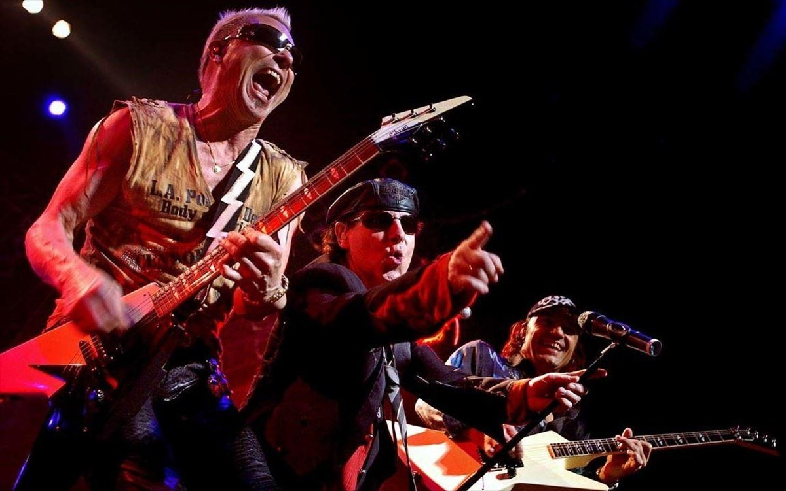
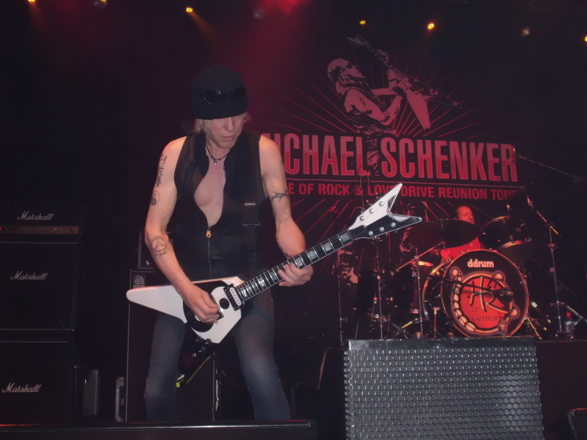

Οι Scorpions, όπως ίσως θα είναι γνωστό, δημιουργήθηκαν από τον Rudolph Schenker, έναν κιθαρίστα από το Ανόβερο της Γερμανίας που είχε δει στην τηλεόραση τους Beatles το 1964 και ήθελε να γίνει σαν κι αυτούς. Είχε γεννηθεί το 1948, πρωτότοκος από έναν αδελφό (Michael) και μια αδελφή, την Barbara, που πολλά χρόνια μετά βρέθηκε να παίζει πλήκτρα στους Γερμανούς Viva.
Το 1965 ο Rudolph σχημάτισε ένα συγκρότημα με τους Wolfgang Dziony (drums), Achim Kircoff (bass) και Karl Heinz Vollmer (guitar), και τους ονόμασε Scorpions. Για το σχήμα αυτό σχεδόν τίποτα δεν είναι γνωστό, παρά το ότι άλλαζαν συνθέσεις και ονόματα συνέχεια. Οι στίχοι τους ήταν στα γερμανικά, και μέχρι τις αρχές της δεκαετίας του ’70 έπαιζαν συνεχώς στη Γερμανία, όπου υπήρχαν πολλές αμερικάνικες βάσεις. Όταν έπαιζαν στις βάσεις αυτές, μπροστά σε ένα ακροατήριο εξολοκλήρου αμερικανικό, έπαιζαν διασκευές κομματιών της εποχής, οι οποίες όσο περνούσαν τα χρόνια παρουσίαζαν μια μετάβαση από την ποπ μουσική της δεκαετίας προς πιο σκληρές, ροκ συνθέσεις.

Στα τέλη του 1970, είχε πια έρθει ο καιρός για τον Rudolph Schenker να αποφασίσει που ήθελε να κινηθεί, κι έτσι υποσχέθηκε στον εαυτό του να μην ξαναπαίξει συνθέσεις άλλων, και έφερε στο συγκρότημα τον μικρό του αδελφό Michael ο οποίος είχει γεννηθεί στο Saustadt της Δυτικής Γερμανίας στις 10 Ιανουαρίου του 1955, και σε πάρα πολύ μικρή ηλικία (12 χρονών) έγινε μέλος του πρώτου συγκροτήματος, που ήταν οι τοπικά γνωστοί Cry.
Μαζί του ο μικρός Michael έφερε τον τραγουδιστή των Cry,Klaus Meine, γεννημένο το 1948, και έτσι το 1971, είχαν γεννηθεί οι καινούροι Scorpions, με την εξής σύνθεση : Rudolph Schenker (κιθάρα), Michael Schenker (κιθάρα), Klaus Meine (φωνητικά), Luthar Heimber (μπάσο) και Wolfgang Dziony (drums).
H σύνθεση αυτή δεν ήταν, φυσικά, σταθερή, και δεν θα μπορούσε να είναι, μιας που οι Heimber και Dziony είχαν τάσεις προς το τζαζ ροκ/ fusion της εποχής, ενώ η καρδιά των υπολοίπων τριών βρισκόταν γερά κρατημένη στο hard rock.
Έτσι οι εμβρυακού αυτοί Scorpions ηχογράφησαν μόνο ένα άλμπουμ στη γερμανική εταιρία Brain/Metronome και σε παραγωγή του πασίγνωστου Conny Plank που κυκλοφόρησε στις αρχές του 1972 με τίτλο “Lonesome Crow”. Το άλμπουμ αυτό κυκλοφόρησε μόνο στη Γερμανία αλλά το 1982, όταν οι Scorpions ήταν ήδη διάσημοι, επανακυκλοφόρησε στην Αγγλία και σε άλλες χώρες. Το “Lonesome Crow” έκανε ενθαρρυντικές πωλήσεις στη Γερμανία, πράγμα κάπως ασυνήθιστο για τοπικό συγκρότημα με στίχους σε γλώσσα άλλη από τη μητρική τους, και επιτέλους οι Scorpions είχαν κάποια θεμέλια πάνω στα οποία μπορούσαν να χτίσουν την καριέρα τους.

Άλλωστε, το 1972 έδωσαν 136 συναυλίες, πολλές ανοίγοντας show των Uriah Heep, Rory Gallagher, UFO, Chicken Shack κλπ.
Ή, τουλάχιστον, έτσι νόμιζαν. Γιατί η τύχη επιφύλασσε στον μεν Michael ένα κάλεσμα το οποίο θα του έφερνε παγκόσμια φήμη μόλις στα 18 του χρόνια, στους δε Scorpions τουλάχιστον δύο χρόνια αναποδιάς και καθυστέρησης. Αυτό που έγινε ήταν το εξής : Οι Scorpions αρνήθηκαν την ευκαιρία να παίξουν support στη γερμανική περιοδεία ενός ανερχόμενου καινούργιου αγγλικού hard rock συνόλου,UFO, οι οποίοι εκείνη την εποχή είχαν για κιθαρίστα τον Mick Bolton και έπαιζαν κυρίως space rock. Όλα πήγαν καλά με τη διαφορά ότι ο Mick Bolton είχε πια βαρεθεί τους UFO και το space rock τους και αποφάσισε να αποσχιστεί. Ο τραγουδιστής των UFO, Phil Mogg, αμέσως εντόπισε τον νεαρό Michael Schenker, και κατάλαβε ότι έχει μπροστά του ένα ανερχόμενο αστέρι. Άλλωστε ο Mogg είναι γνωστός για το γούστο του στους κιθαρίστες. Έτσι λοιπόν ο Mogg δε χρονοτρίβησε καθόλου στο να προτείνει τη θέση του κιθαρίστα των UFO στον άπειρο και ξένο Michael Schenker, ο οποίος εντυπωσιάστηκε από το γεγονός ότι η πρόταση προερχόταν από ένα ανερχόμενο αγγλικό συγκρότημα, και δέχτηκε χωρίς δεύτερη κουβέντα. Ήδη το αστεράκι του Michael είχε αρχίσει να λάμπει περισσότερο από κάθε άλλο μέσα στο συγκρότημα, το οποίο δε μπόρεσε να συνεχίσει, με συνέπεια οι Scorpions να διαλυθούν άδοξα. Ο Rudolph, όμως, δεν εννούσε να το βάλει κάτω, και κράτησε τη στενή του σχέση με τον Klaus Meine, με σκοπό να ξαναφτιάξουν μαζί το συγκρότημα. Στο μεταξύ, και οι δύο πήγαν στους Dawn Road, όπου έπαιζε κιθάρα ο Ulrich Roth. Τον Αύγουστο, όμως, του 1973, οι Schenker / Meine / Roth προσέλαβαν δύο καινούρια μέλη στους Dawn Road, τους μετονόμασαν και δημιούργησαν τους Scorpions No 2. (Rudolph Schenker (κιθάρα), Klaus Meine (φωνητικά), Ulrich Roth (κιθάρα), Francis Buchholz (μπάσο) και Jurgen Rosenthal (drums)). O Francis Buchholz, γεννημένος του 1954,ήταν μια εποχή μπασίστας των Dawn Road. Όσο για τον νέο κιθαρίστα, ο Ulrich Roth με την πρώτη ματιά θα μπορούσε να χαρακτηριστεί άλλος ένας υποψήφιος διάδοχος του Jimi Hendrix, μαζί με την παρέα Robin Trower, Frank Marino, Stevie Ray Vaughan κλπ., αλλά αυτό είναι λάθος. Σίγουρα ο Roth ήταν (και παραμένει) χίπης, σίγουρα αναφέρει σαν μεγάλη του επιρροή τον Hendrix, αλλά έχει ένα εντελώς διαφορετικό προσωπικό στυλ, όπως έδειξε τόσο στην καριέρα του με τους Scorpions, όσο και στα τρία προσωπικά του albums.